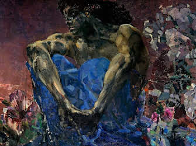

Mikhail Lermontov (1814-1841)
Important things about him
- Russian Byron
- From Byronic hero comes the superfluous man, a hero who cannot fit in society
- His hero is an anti-hero, a dark Byronic exile and rebel: notable titles: "Demon", "Sail", "Hero of Our Time"
- Sets his texts in the Russian orient, the Caucasus

Mikhail Vrubel, Demon (1890), Symbolist painting inspired by Lermontov